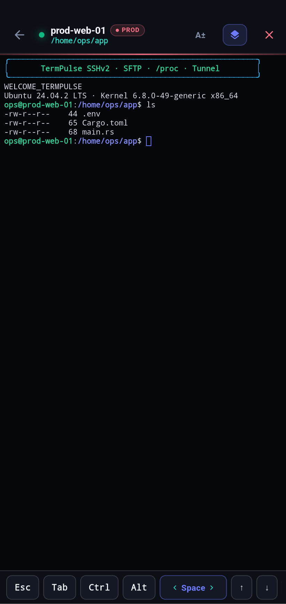

Terminal và tệp, cùng một nhịp.
SSH bằng mật khẩu hoặc private key, nhiều tab, snippet và SFTP ngay cạnh terminal. Duyệt, sửa và truyền tệp mà không phải rời phiên làm việc.
Jump hostSOCKS / HTTP proxySSH tunnels
MỘT KHÔNG GIAN CHO MỌI KẾT NỐI
Từ dòng lệnh đến màn hình từ xa. SSH, SFTP và RDP trong một giao diện gọn gàng — trên máy tính và Android.
Flutter + Rust · Không cần tài khoản TermPulse · Dữ liệu lưu trên thiết bị

ÍT CHUYỂN CỬA SỔ HƠN
Các công cụ quen thuộc, kết nối với nhau trong một không gian làm việc.
SSH bằng mật khẩu hoặc private key, nhiều tab, snippet và SFTP ngay cạnh terminal. Duyệt, sửa và truyền tệp mà không phải rời phiên làm việc.
Trên Android, vuốt để rê chuột, chạm một ngón để click trái, chạm hai ngón để click phải. Thu phóng và toàn màn hình khi cần nhìn rõ hơn.
RDP/VNC kết nối trực tiếp; chưa có RD Gateway hoặc SSH tunnel tích hợp.
Nhóm host, tìm kiếm nhanh, lệnh đã lưu, tunnel SSH và theo dõi tài nguyên Linux qua /proc. Bảng công cụ trên mobile kéo lên xuống được, dễ dùng khi xoay màn hình.
Xác minh SSH host key, kiểm tra chứng thư RDP, cảnh báo trước một số lệnh nguy hiểm. AI chỉ tạo nháp khi bạn yêu cầu, qua endpoint bạn chọn.
Cảnh báo lệnh hỗ trợ kiểm tra; không phải sandbox hoặc bảo đảm chống mất dữ liệu.
XEM TRƯỚC KHI CÀI
Ảnh chụp ứng dụng thật với dữ liệu thử nghiệm. Chọn ảnh để phóng to.
Một số ảnh được chụp ở bản thử nghiệm trước. Giao diện có thể khác giữa phiên bản và hệ điều hành.
Thông tin kết nối và tùy chọn lưu trên thiết bị. Không có quảng cáo hay SDK phân tích hành vi trong ứng dụng hiện tại.
Mật khẩu và private key trong kho credential được mã hóa bằng ChaCha20-Poly1305, với khóa dẫn xuất Argon2id. Hostname, ghi chú, lịch sử lệnh và log không được mã hóa toàn bộ.
Ứng dụng kết nối tới máy chủ, proxy hoặc AI endpoint bạn cấu hình. Telnet và VNC TCP không mã hóa; hãy dùng mạng tin cậy hoặc VPN phù hợp.
BẮT ĐẦU VỚI TERMPULSE
Liên kết được lấy trực tiếp từ GitHub Releases. Chỉ hiện nút tải khi bản phát hành thực sự có gói phù hợp.
Đang kiểm tra bản phát hành…
Cài trực tiếp bằng tệp APK.
Đang kiểm tra…Bản desktop cho máy tính Windows.
Đang kiểm tra…Kiểm tra kiến trúc trong tên gói tải.
Đang kiểm tra…Bản desktop native cho Linux.
Đang kiểm tra…Dự án đang phát triển. Chưa có liên kết Google Play hoặc App Store đã xác nhận; iOS cần tự build và ký ứng dụng. Nút tải không xác nhận gói đã được cửa hàng duyệt. Đọc ghi chú phát hành và kiểm tra SHA256 nếu có trước khi cài.
CÙNG LÀM TỐT HƠN
Đọc mã nguồn, góp ý cách dùng hoặc báo vấn đề bạn gặp. Mọi đóng góp cụ thể đều giúp dự án tốt hơn.
Hỏi cách dùng, chia sẻ quy trình và đề xuất tính năng.
GitHub DiscussionsGửi các bước tái hiện, phiên bản ứng dụng và hệ điều hành.
GitHub IssuesMã Flutter, lõi Rust, hướng dẫn build và quy trình CI.
Xem repository ↗Issue và thảo luận đều công khai. Không đăng mật khẩu, private key, token, IP nội bộ nhạy cảm hoặc log chưa che dữ liệu.
FAQ
Không cần tài khoản TermPulse. Lần đầu mở ứng dụng, bạn tạo mật khẩu Vault trên thiết bị. Tài khoản SSH/RDP của máy chủ vẫn cần được cấu hình riêng.
Có SSH/SFTP, RDP, VNC, Telnet, local shell và Serial theo nền tảng. Mosh và Eternal Terminal chưa có luồng kết nối hoàn chỉnh. Khả năng chạy thực tế phụ thuộc máy chủ, hệ điều hành và phần cứng.
Không tự động. Trang ưu tiên bản phát hành ổn định mới nhất trên GitHub. Nếu chưa có, trang có thể hiển thị bản xem trước cộng đồng được ghi nhãn rõ ràng với các gói máy tính đã tải lên. Build CI thành công không thay thế kiểm thử trên thiết bị thật. iOS cần macOS, Xcode và cấu hình ký phù hợp.
Vuốt một ngón để rê chuột tương đối; chạm một ngón để click trái, chạm hai ngón đồng thời để click phải. Giữ một ngón rồi kéo để kéo thả; dùng pinch hoặc nút +/− để thu phóng. Có chế độ toàn màn hình và nút vừa cửa sổ.
Không có tài khoản hoặc máy chủ TermPulse để đặt lại mật khẩu chính. Hãy bảo vệ mật khẩu và các bản sao lưu bạn tự tạo. Đừng xóa dữ liệu ứng dụng nếu chưa hiểu dữ liệu nào sẽ mất.